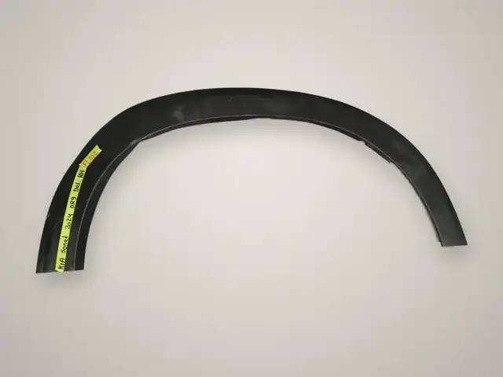
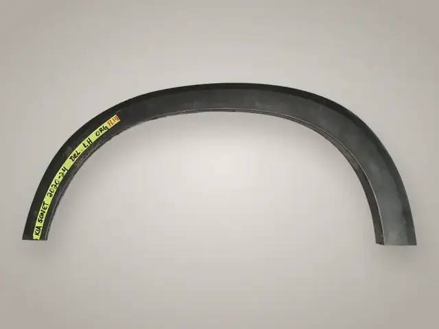
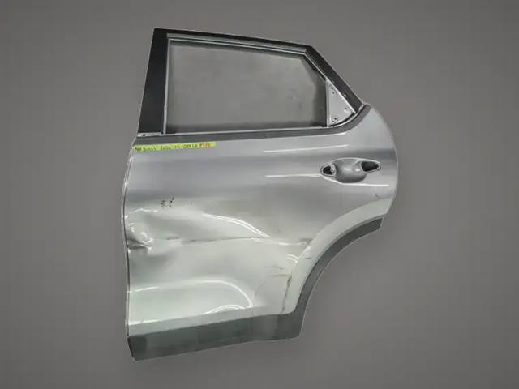
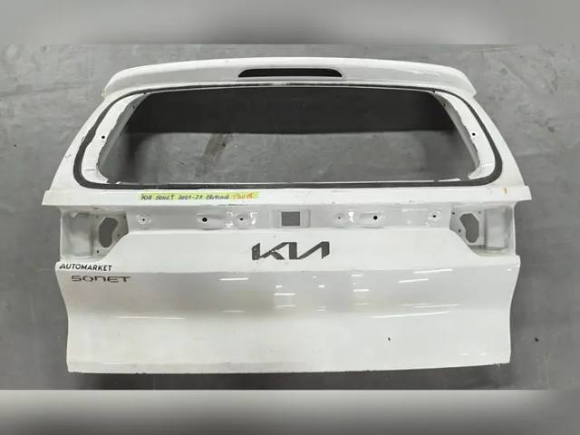
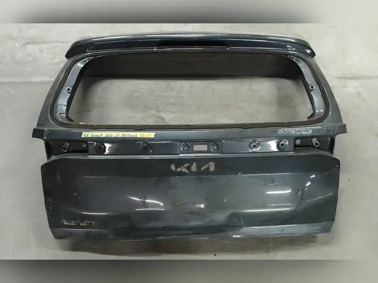

Piezas de carrocería para KIA Sonet
26 piezas disponibles hoy para KIA Sonet, cada una con su foto y su código: flares (5), puertas (5), tapas de baúl (3), estribos y rolling boards (2). Dinos el año de tu carro y te confirmamos si le sirve.
- Garantía de 3 días
- Foto real de cada pieza
- Efectivo, Yappy o ACH
- Lunes a sábado, 8:00 a. m. a 5:00 p. m.
Flares para KIA Sonet 5
 FL007Sonet2024-26 · lado izquierdo · original
FL007Sonet2024-26 · lado izquierdo · original
FL012Sonet2024-26 · lado derecho · original FL124Sonet2021-26 · lado izquierdo · original
FL124Sonet2021-26 · lado izquierdo · original FL114Sonet2020-24 · lado izquierdo · original
FL114Sonet2020-24 · lado izquierdo · original
FL118Sonet2020-24 · lado izquierdo · originalPuertas para KIA Sonet 5
 PT003Sonet2020-26 · lado izquierdo · original
PT003Sonet2020-26 · lado izquierdo · original PT010Sonet2020-26 · lado derecho · original
PT010Sonet2020-26 · lado derecho · original
PT011Sonet2020-26 · lado izquierdo · original PD013Sonet2020-26 · lado izquierdo · original
PD013Sonet2020-26 · lado izquierdo · original PD009Sonet2020-26 · lado izquierdo · original
PD009Sonet2020-26 · lado izquierdo · originalTapas de baúl para KIA Sonet 3

TB015Sonet2020-23 · original TB016Sonet2022-25 · original
TB016Sonet2022-25 · original
TB017Sonet2020-23 · original RB025Sonet
RB025Sonet RB036Sonet
RB036Sonet DTI034Sonet
DTI034Sonet DTI038Sonet
DTI038Sonet R090Sonet
R090Sonet 401Sonet
401Sonet DD003Sonet
DD003Sonet CH113Sonet
CH113Sonet TA024Sonet
TA024Sonet PCh015Sonet
PCh015Sonet